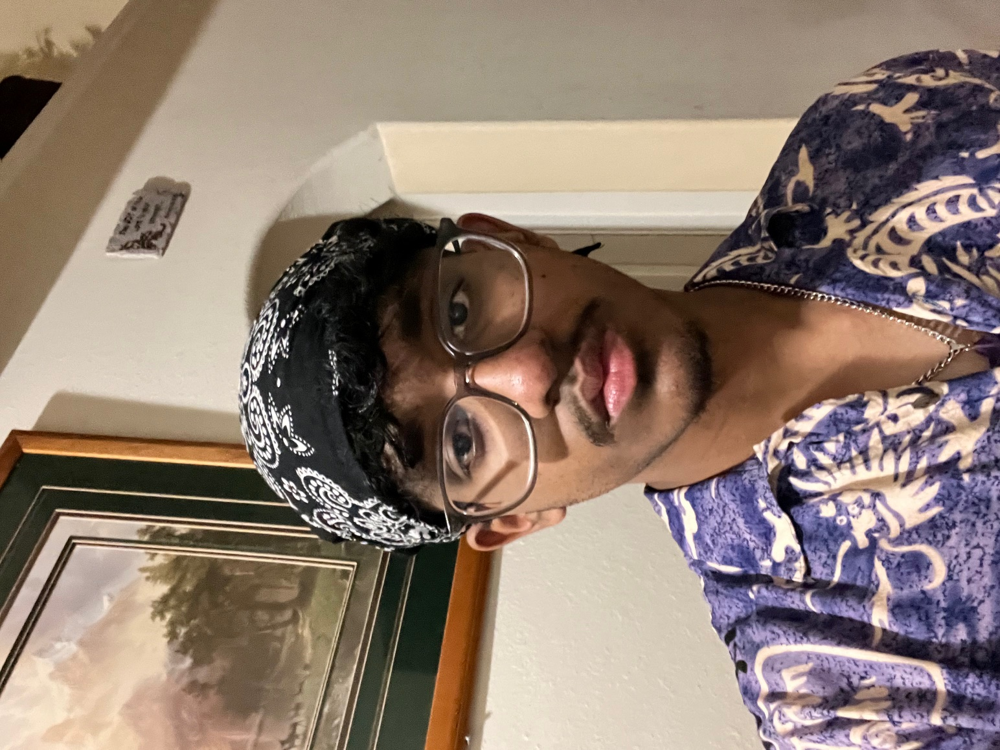

<body>

    <header>
        <h1>The SL Corner</h1>
    </header>

    <nav>
        <ul>
            <li><a href="Home.html">Home</a></li>
            <li><a href="About Me.html">About Me</a></li>
            <li><a href="order.html">Order</a></li>node
            <link rel="stylesheet" href="style.css">
        </ul>
    </nav>

    <footer>
        <p>&copy; 2024 My Website. All rights reserved.</p>
    </footer>

</body>


<section id="About Me">
<section class ="about-box">
    <link rel="stylesheet" href="style.css">
    <h2>About Martin Rajan</h2>
    <p>Hi there! I'm Martin Rajan, the proud owner of our cozy food establishment nestled right here on the vibrant campus of the University of Houston Sugar Land.</p>
    <p>With a passion for culinary arts and a dedication to providing delicious and wholesome meals, 
        I've embarked on this exciting journey to bring a taste of comfort and joy to the students, faculty, and visitors of our campus.</p>
    <p>Our mission is simple yet profound: to serve up mouthwatering dishes made with love and care, using fresh and locally-sourced ingredients whenever possible. 
        From hearty breakfast options to satisfying lunches and snacks, 
        we strive to cater to diverse tastes and dietary preferences.</p>
    <p>At our food business, we don't just see ourselves as mere vendors; we're part of the vibrant fabric of campus life, 
        fostering community spirit and fueling the minds and bodies of those who walk through our doors.</p>
    <p>Come join us for a culinary adventure that's sure to tantalize your taste buds and leave you craving for more!</p>

</section>
</section>


<body>
<link rel="stylesheet" href="style.css">
    

</body>
